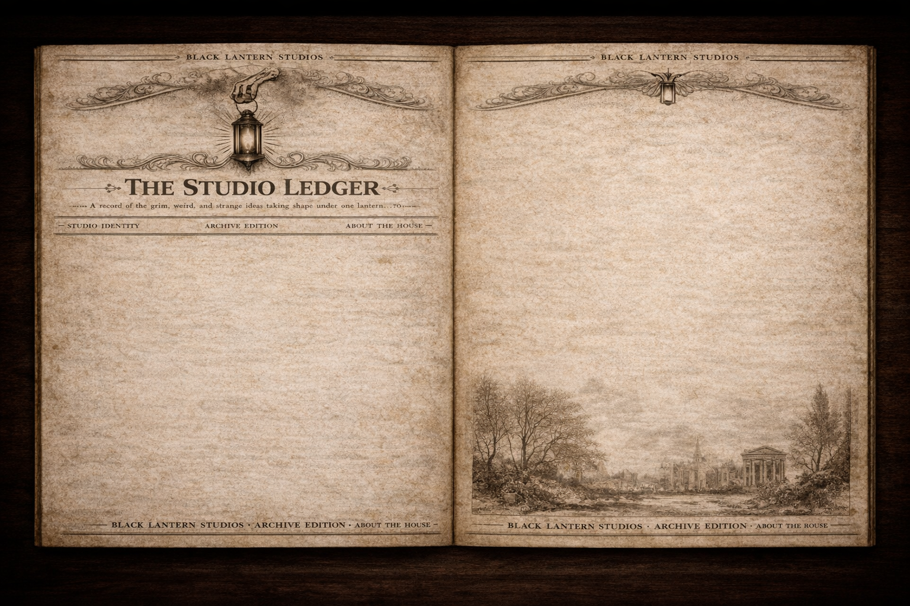

Black Lantern Studios builds tools, worlds, and experiences with a pulse.
This studio exists at the intersection of practical systems and dark creative vision. Some projects solve real-world problems. Some open doors into new worlds. All of them are built with intent, atmosphere, and a refusal to feel disposable.
Why It Exists
Not everything worth building should feel generic. Black Lantern Studios was created to make space for projects with more identity, more atmosphere, and more purpose.
Build With Intent
Every app, game, or world should have a reason to exist. The goal is to create something sharp, useful, and lasting.
Give It Identity
Good work should not feel anonymous. A strong visual voice and memorable atmosphere are part of the product itself.
Cross the Real and the Unreal
Practical utility and creative storytelling belong in the same house. This studio is built to hold both.
Black Lantern Studios is not here to follow trends. It is here to build things with weight. Tools with purpose. Worlds with atmosphere. Work with a point of view.